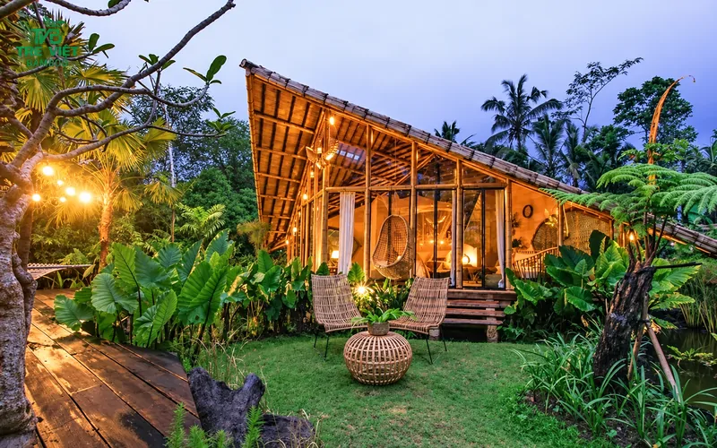

Nhà tre, chòi tre đang được nhiều gia chủ, chủ homestay và quán cà phê lựa chọn nhờ chi phí hợp lý, thi công nhanh và mang lại không gian mát mẻ, gần gũi thiên nhiên.
Thế nhưng, trước khi quyết định, hầu hết gia chủ đều băn khoăn cùng một câu hỏi: "Làm bằng tre liệu có bền không, vài năm có bị mối mọt ăn hết không?" Câu hỏi ấy hoàn toàn chính đáng.
Tre là vật liệu đẹp, nhưng chỉ thật sự bền khi được chọn đúng, xử lý đúng và dựng đúng kỹ thuật. Chỉ cần sai một khâu, công trình có thể xuống cấp nhanh hơn bạn nghĩ.
Tre Việt Building hoạt động trong lĩnh vực tre trúc từ năm 2016. Chúng tôi nhận thi công nhà tre, chòi tre trọn gói, từ tư vấn ý tưởng, xử lý nguyên liệu tại xưởng cho đến lắp dựng, hoàn thiện và bàn giao. Mỗi công trình đều hướng tới một mục tiêu: đẹp khi bàn giao, và vẫn vững chãi sau nhiều mùa mưa nắng.
Tre Việt Building Nhận Thi Công Những Hạng Mục Nào?
Chúng tôi nhận thi công các công trình tre cho cả gia đình lẫn đơn vị kinh doanh:


Chúng tôi không áp một bản vẽ có sẵn cho mọi công trình. Một chòi tre trên sân thượng nhà phố ở TP.HCM sẽ khác hoàn toàn một bungalow trên đồi ở Lâm Đồng, từ chiều cao cột, độ dốc mái cho đến cách che nắng hướng Tây. Vì vậy, mỗi dự án đều được thiết kế riêng theo mặt bằng, khí hậu và mục đích sử dụng thực tế.
Nhưng dù là hạng mục nào, điều gia chủ quan tâm nhất vẫn là: công trình tre có bền không, có bị mối mọt không? Hãy bắt đầu từ chính mối lo đó.
Tre Không Được Xử Lý Kỹ: Mối Mọt Phá Hỏng Công Trình Ra Sao?
Mọt tre ăn tinh bột và đường có sẵn trong thân tre. Tre không được xử lý, hoặc chỉ quét thuốc bên ngoài, sớm muộn cũng bị mọt đục từ bên trong. Bên ngoài trông vẫn còn nguyên, đến khi phát hiện thì cây tre đã rỗng.
- 01

Tre không xử lý bị mọt ăn mục rỗng
- 02

Tre bị mọt nứt gãy, mất khả năng chịu lực
- 03

Bên trong thân tre bị đục rỗng
- 04

Tấm tre sơn bị mọt, bột trắng bám đầy
- 05

Bột mọt rơi ra trên bề mặt tre
Những tác hại mà gia chủ, chủ quán thường gặp khi dùng tre chưa xử lý:
Đục rỗng, mất khả năng chịu lực
Mọt ăn rỗng thân tre từ bên trong, cột kèo dễ nứt gãy, mái xệ, công trình xuống cấp chỉ sau vài mùa mưa.
Bột mọt rơi, mất vệ sinh
Bột mọt rơi liên tục xuống sàn, bàn ghế, rất khó chấp nhận ở quán ăn, quán cà phê hay homestay.
Lây lan sang hạng mục khác
Mọt từ một cây tre có thể lan sang trần, vách và đồ nội thất tre, gỗ xung quanh.
Tốn kém sửa chữa, gián đoạn kinh doanh
Phải tháo dỡ, thay từng phần, có khi làm lại cả công trình, quán phải tạm ngưng kinh doanh.
Điều Gì Quyết Định Độ Bền Của Nhà Tre, Chòi Tre?
Vậy làm sao để công trình không rơi vào tình trạng trên? Vấn đề hiếm khi nằm ở cây tre, mà nằm ở cách tre được xử lý và lắp dựng. Theo kinh nghiệm thi công của chúng tôi, độ bền của một công trình tre phụ thuộc vào 4 yếu tố: xử lý tận gốc, phơi đủ khô, thiết kế che chắn và mối nối, bảo dưỡng đúng cách.
1. Tre có được xử lý tận gốc hay không
Trong thân tre tươi có tinh bột và đường, chính là "thức ăn" thu hút mối mọt và nấm mốc. Nếu chỉ quét thuốc bên ngoài, lớp bảo vệ rất dễ bị phá khi tre bị cắt, khoan hoặc nứt. Tại xưởng của Tre Việt Building, tre được xử lý kết hợp giữa phương pháp truyền thống và hiện đại:
- hun khói để lên màu đẹp và tăng khả năng kháng côn trùng;
- ngâm thuốc sinh học để phòng mối mọt sâu bên trong thân;
- luộc trong dung dịch boron để thủy phân tinh bột và diệt trứng mọt.
Điểm khác biệt của Tre Việt Building nằm ở bước luộc: tre được luộc trong dung dịch boron để thủy phân tinh bột trong thân tre, đồng thời nhiệt độ cao giúp làm chín trứng mọt còn ẩn bên trong.
Nồng độ muối borax được tăng lên để thấm sâu vào thớ tre, ngăn chặn mối mọt xâm nhập về sau.
- 01

Khai thác, phân loại tre tại vùng nguyên liệu
- 02

Chà rửa sạch từng cây tre
- 03

Bó và xếp tre vào bể xử lý
- 04

Ngâm tre trong bể thuốc chống mối mọt
- 05

Lò đun cho bể luộc tre
- 06

Bể xử lý tre quy mô lớn tại xưởng
- 07

Tre dựng hong khô sau xử lý
- 08

Tre thành phẩm sau xử lý
- 09

Tre thành phẩm tại xưởng
- 10

Tre đã xử lý thẳng, đồng đều
- 11

Tre xếp kho chờ thi công
Xem thêm các phương pháp trong bài xử lý tre chống mối mọt.
2. Tre đã khô đủ trước khi dựng
Tre còn ẩm mà đưa vào thi công sẽ co ngót, nứt dọc thân, và vết nứt chính là cửa ngõ cho côn trùng. Sau khi xử lý, tre được phơi trong điều kiện kiểm soát, xoay cây định kỳ cho đến khi độ ẩm xuống dưới 15% mới xuất xưởng.
3. Thiết kế có "che" cho tre hay không
Tre sợ nhất là ẩm kéo dài và tiếp xúc trực tiếp với đất. Một công trình tre tốt luôn có mái vươn đủ rộng để chắn mưa tạt, có đường thoát nước hợp lý, và chân cột kê cao, cách ly khỏi nền đất ẩm. Ngay cả khi vận chuyển tới công trình, tre cũng được kê không chạm đất và phủ bạt khi trời mưa.
4. Mối nối gọn và bảo dưỡng định kỳ
Mỗi cây tre có hình dáng tự nhiên khác nhau, nên người thợ phải biết chọn cây nào cho vị trí nào. Mối nối đúng kỹ thuật giúp kết cấu chịu lực tốt, hạn chế nứt và tránh những chỗ nước dễ đọng lại. Sau bàn giao, chỉ cần kiểm tra định kỳ và phủ lại lớp bảo vệ khi cần, công trình sẽ giữ được vẻ đẹp lâu dài.
Vì vậy, đừng chỉ đánh giá một công trình tre qua tấm ảnh lúc mới hoàn thiện. Chất lượng thật sự nằm ở những chi tiết phía sau lớp hoàn thiện, những thứ người sử dụng khó nhìn thấy nhưng quyết định công trình đứng được bao lâu.
Công Trình Thực Tế: Nhiều Năm Vẫn Không Mối Mọt
Cách tốt nhất để biết tre có bền hay không là nhìn vào những công trình đã đứng vững qua nhiều mùa mưa nắng. Dưới đây là một số công trình Tre Việt Building đã thi công, từ công trình đã sử dụng gần 10 năm đến công trình mới nhất:
-
2017

Alez Bamboo
Quán bar trên phố Tây Phạm Ngũ Lão với mặt tiền và mái hiên dựng hoàn toàn bằng khung tre. Công trình nằm ngoài trời, chịu nắng mưa trực tiếp mỗi ngày.
Từ 2017 đến nay vẫn không bị mối mọt
-
2018

Ruộng Pub
Pub mang không khí đồng quê giữa trung tâm Quận 1: trần hiên ốp tre, cột và vách tre, đèn lồng tre treo dọc lối đi.
Đã sử dụng 8 năm
-
2019

Holiday Cộng Hòa
Ốp tre trúc trang trí trong khách sạn, điểm nhấn là mảng trần tre đan cách điệu phía trên sảnh đón khách.
Đã sử dụng 7 năm
-
2021

Amiana Nha Trang
Resort ven vịnh Nha Trang. Trần tre đan trong các villa giúp phòng nghỉ mát và gần gũi thiên nhiên, cửa kính mở thẳng ra vườn và biển.
Đã sử dụng 5 năm
-
2025

Amiana Cam Ranh
Ốp trần tre tầm vông cho khu hồ bơi của resort. Giàn tre vừa tạo bóng mát vừa là điểm nhấn kiến trúc khi nhìn từ hồ bơi.
Công trình mới nhất, cùng quy trình xử lý tre
Quy Trình Thi Công Nhà Tre, Chòi Tre Trọn Gói
-
01Bước 1
Tư vấn & khảo sát
Lắng nghe nhu cầu, ngân sách, mục đích sử dụng. Khảo sát mặt bằng, hướng nắng, hướng gió, nền đất và điều kiện vận chuyển vật tư tại công trình.
Khảo sát tận nơi -
02Bước 2
Thiết kế & phối cảnh 3D
Lên phương án kiến trúc, kiểu mái, kích thước cột kèo, rồi gửi bản vẽ và phối cảnh để bạn duyệt.
Bản vẽ + phối cảnh 3D -
03Bước 3
Báo giá chi tiết
Bóc tách rõ từng hạng mục vật tư, nhân công, mái lợp và phần hoàn thiện đi kèm.
Báo giá bóc tách từng hạng mục -
04Bước 4
Xử lý nguyên liệu & thi công
Tre được tuyển chọn, xử lý (luộc boron, ngâm thuốc, hun khói) và phơi đạt chuẩn tại xưởng, sau đó vận chuyển và lắp dựng đúng bản vẽ đã thống nhất.
Tre đạt chuẩn tại xưởng -
05Bước 5
Nghiệm thu & bàn giao
Cùng bạn kiểm tra từng hạng mục, bàn giao công trình kèm chính sách bảo hành và hướng dẫn bảo dưỡng.
Bảo hành + hướng dẫn bảo dưỡng
Nhà tre, bungalow thông thường thi công khoảng 30–60 ngày kể từ khi chốt thiết kế và chuẩn bị xong nguyên liệu. Chòi tre nhỏ sẽ nhanh hơn.
Câu Hỏi Thường Gặp
1Nhà tre, chòi tre có bị mối mọt không?
Tre chưa xử lý rất dễ bị mối mọt vì trong thân có tinh bột và đường. Tre tại Tre Việt Building được luộc trong dung dịch boron để thủy phân tinh bột, diệt trứng mọt, kết hợp ngâm thuốc sinh học, hun khói và phơi đạt độ ẩm dưới 15% trước khi thi công. Khi kết hợp thêm thiết kế che mưa và kê chân cột cách đất, nguy cơ mối mọt được hạn chế tối đa.
2Làm một căn nhà tre mất bao lâu?
Tùy quy mô công trình. Một căn nhà tre hay bungalow phổ biến mất khoảng 1–2 tháng, chòi tre nhỏ chỉ vài tuần, còn nhà hàng, resort có thể lâu hơn. Thời gian được tính từ lúc bạn duyệt bản vẽ và tre đã xử lý xong tại xưởng.
3Tôi có được xem bản vẽ trước khi làm không?
Có. Bạn sẽ nhận bản vẽ concept và phối cảnh 3D, được điều chỉnh đến khi hài lòng rồi mới bắt đầu thi công.
4Làm sao để biết chi phí chính xác cho công trình của tôi?
Bạn chỉ cần gửi diện tích, vị trí công trình và vài hình ảnh mẫu mình thích. Từ đó, đội ngũ kỹ thuật sẽ tư vấn phương án phù hợp và bóc tách từng hạng mục trước khi báo giá. Bạn có thể tham khảo trước mức giá theo từng loại mái trong bài báo giá thi công nhà tre trúc.
5Công trình được bảo hành như thế nào?
Phần kết cấu được bảo hành từ 12 đến 24 tháng tùy hạng mục. Trong thời gian này, nếu phát sinh sự cố, đội ngũ kỹ thuật sẽ kiểm tra và khắc phục kịp thời.
6Sau khi bàn giao cần bảo dưỡng ra sao?
Nên kiểm tra định kỳ các mối nối và chân cột, giữ công trình khô thoáng, và phủ lại lớp bảo vệ bề mặt khi thấy tre bạc màu. Đội ngũ Tre Việt sẽ hướng dẫn cụ thể khi bàn giao.
Khu Vực Phục Vụ
Tre Việt Building nhận thi công nhà tre, chòi tre trên toàn quốc. Trọng điểm phục vụ là TP.HCM, Đồng Nai, Lâm Đồng và Khánh Hòa. Với công trình ở xa, phương án khảo sát, vận chuyển vật tư và bố trí đội thi công sẽ được tính toán theo vị trí và quy mô cụ thể. Ngoài nhà tre và chòi tre, bạn có thể xem thêm các hạng mục khác trong dịch vụ thi công tre trúc của chúng tôi.
Nhận Tư Vấn & Báo Giá Miễn Phí
Một mái tre đẹp không chỉ nằm ở bản vẽ, mà nằm ở những cây tre được chọn kỹ, xử lý kỹ và dựng bằng tay nghề thật. Nếu bạn đang ấp ủ một căn nhà tre giữa vườn, một chòi tre bên hồ bơi hay một khu bungalow cho homestay, hãy để Tre Việt Building cùng bạn biến ý tưởng thành công trình.
Nhận tư vấn & báo giá miễn phí
CÔNG TY TNHH TRE VIỆT BUILDING
Trụ sở917 Phạm Văn Đồng, Phường Linh Xuân, TP. Hồ Chí Minh
Nhà máy sản xuấtTổ 6, Ấp Phú Hợp, Xã Phú Lâm, Tỉnh Đồng Nai
Hotline/Zalo087.6915.999
Emailtreviet23@gmail.com
Websitetretruc.com.vn